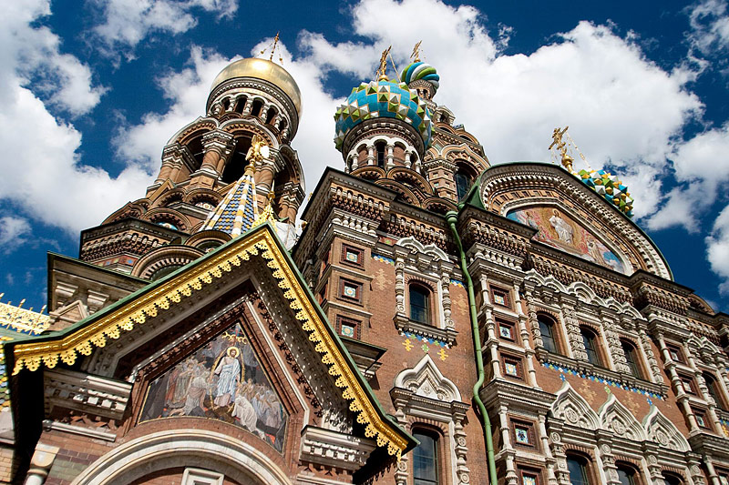
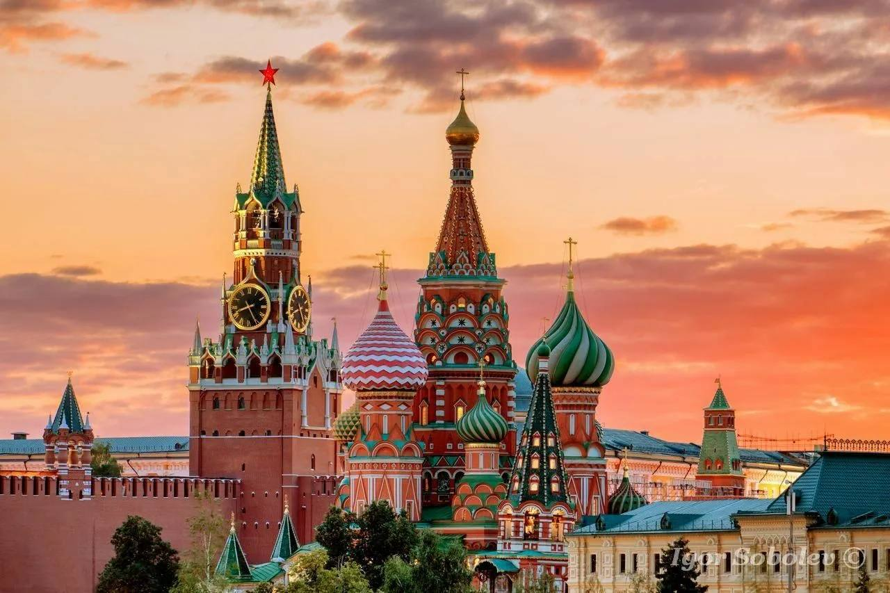
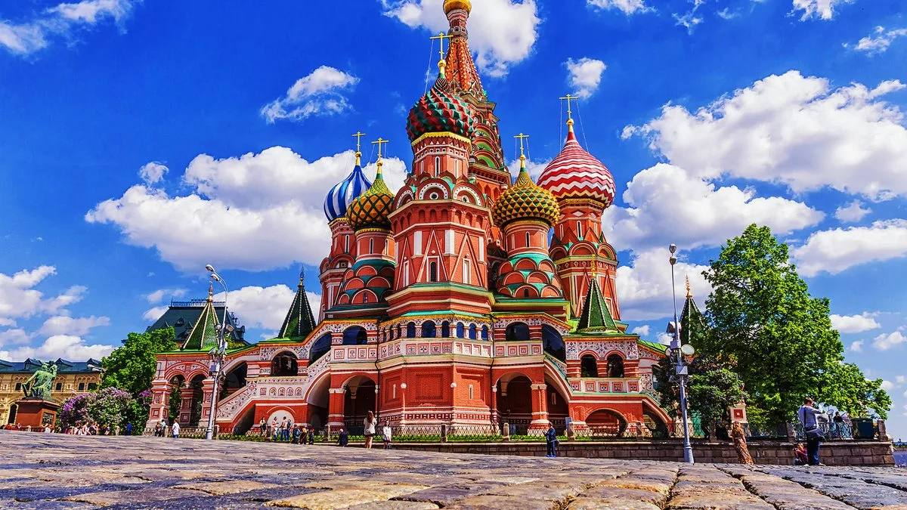
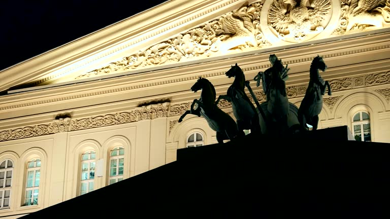
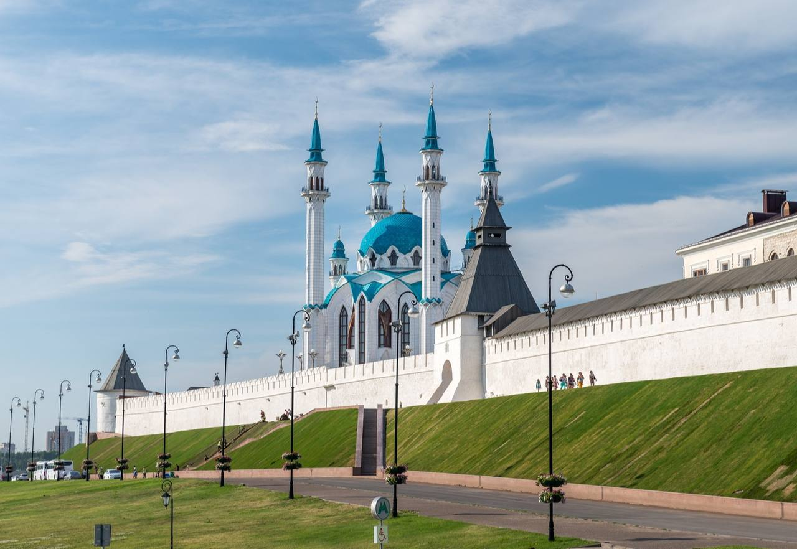

Discover the Beauty of Russia in English!
Why Russia?
-
Russia is the largest country in the world by land area, covering over 17 million square kilometers.
-
Russia spans 11 time zones, making it the country with the most time zones in the world.
-

The population of Russia is approximately 146 million people, representing over 190 ethnic groups.
-

More than 70% of Russia's population lives in urban areas, with Moscow being the largest city and home to over 12 million residents.
Sights
-

The Church of the Saviour on Blood (St. Petersburg)
The Church of the Saviour on Blood in St. Petersburg is an Orthodox memorial single-altar church in the name of the Resurrection of Christ. It was built in memory of the fact that on March 1 (13), 1881, Emperor Alexander II was mortally wounded in this place as a result of an assassination attempt. Located in the historical centre of St. Petersburg on the bank of the Griboyedov Canal next to the Mikhailovsky Garden and Stable Square. The height of the nine-headed temple is 81 metres, the capacity is up to 1600 people. The architecture of the temple is an example of the late stage of the evolution of the «Russian style». The building is a collective image of a Russian Orthodox church, focussed on the samples of Moscow and Yaroslavl of the XVI-XVII centuries. The architecture of St. Basil’s Cathedral in Moscow had a great influence on the appearance of the temple. On the outside of the temple there are inscriptions that emphasise the achievements of Russia during the reign of Alexander II. A variety of finishing materials are used in the decor of the building - brick, marble, granite, enamels, gold-plated copper and mosaic. Inside, the temple is a mosaic museum, the area of which is 7065 square metres. The mosaic was created in the workshop of V. A. Frolov based on sketches of more than 30 artists, among whom were such as V. Min Vasnetsov, F. S. Zhuravlev, M. C Nesterov, A. P. Ryabushkin, V. C Belyaev, N. N. Kharlamov.
-

The Moscow Kremlin
The Moscow Kremlin is a fortress in the centre of Moscow and its oldest part. This is the main socio-political and historical-artistic complex of the city, the official residence of the President of the Russian Federation. Some characteristics of the Kremlin: It is located on the high left bank of the Moscow River - Borovitsky Hill, at the confluence of the Neglinnaya River. In the plan, it is an incorrect triangle with an area of 27.5 hectares. The southern wall faces the Moscow River, the northwestern wall faces the Alexander Garden, and the eastern wall faces Red Square. There are 20 towers on the territory of the Kremlin, the highest is the Spasskaya Tower - its height reaches 71 m. The architectural ensemble includes 8 cathedrals, among which the most important is the Assumption Cathedral. The Armoury exhibits ancient jewellery belonging to Russian princes and emperors. The famous Monomakh hat, the best samples of Russian weapons, carriages, a throne are kept here. The Grand Kremlin Palace is a majestic building where all the most significant festivals, concerts and other events are held. On the territory of the Moscow Kremlin, you can admire the Tsar Cannon, cast in 1586. It was created to protect the fortress, but in the entire history of its existence, the gun has never fired like this. The Moscow Kremlin is included in the UNESCO World Cultural Heritage List.
-

St. Basil's Cathedral
The Cathedral of the Intercession of the Blessed Virgin on the Rva, better known as St. Basil's Cathedral, is located in the southern part of Red Square in Moscow, near the Spassky Gate of the Kremlin, above the descent to the Moscow River. The temple was built in the middle of the 16th century by order of Tsar Ivan IV the Terrible to commemorate the conquest of the Kazan Khanate - part of the former Golden Horde - as a sign of gratitude for the victory. The cathedral has a complex structure. The main pillar-shaped church in honour of the Intercession of the Mother of God is surrounded on four sides by axial churches, between which there are four smaller churches. In the second half of the 17th century, the Tent Bell Tower was added to the complex. One of the most revered shrines of the temple is the carved arch above the burial of Basil the Blessed. The main value of the cathedral is its unique iconostasis, which contains more than four hundred icons of the XVI-XIX centuries, made by Novgorod and Moscow masters of church painting. Today the cathedral is an active cathedral of the Russian Orthodox Church and a branch of the Historical Museum.
-

The Bolshoi Theatre
The Bolshoi Theatre is one of the largest theatres in Russia, located in Moscow, and one of the most famous opera and ballet theatres in the world. The full name is the State Academic Bolshoi Opera and Ballet Theatre of Russia. The theatre building is an eight-column octagon in the classical style with the chariot of the god Apollo above the portico. The five-level auditorium is famous for its size and excellent acoustics. It is decorated with gilded stucco, ceiling paintings, a huge crystal multi-tiered chandelier. The height of the hall is 21 metres, the length is 25 metres, the width is 26 metres. It has 2153 seats. There is a square with a fountain in front of the Bolshoi Theatre. The repertoire of the theatre includes the best world works ("Valkyrie", "Tangeiser", "Payatsy", "Bohème") and outstanding Russian operas ("Sadko", "The Golden Rooster", "The Stone Guest", "The Tale of the Invisible City of Kitezh").
-

The Kazan Kremlin
The Kazan Kremlin is the oldest part and citadel of Kazan, a complex of architectural, historical and archeological monuments that reveal the centuries-old history of the city. Located on the cape of the high terrace of the left bank of the Kazanka on the section of its current in the city centre, more than a kilometre from its mouth. The territory of the Kremlin is an incorrect polygon in plan, repeating the outlines of the Kremlin hill, stretched from the northwest, from the Kazanka River, to the southeast, to May 1 Square. The structure of the Kremlin includes 13 towers, the new Kul-Sharif Mosque, the Syuyumbike Tower, the Annunciation Cathedral, the Presidential Palace, the Vvedensky Church, as well as the Transfiguration Monastery. The Kazan Kremlin is the official residence of the Head of the Republic of Tatarstan. UNESCO World Heritage Site since 2000 and Russian cultural heritage of federal significance. There are many attractions on the territory of the Kremlin: ancient towers and cathedrals, the most famous mosque in Russia and Europe, historical and memorial buildings, museums and galleries, observation platforms.